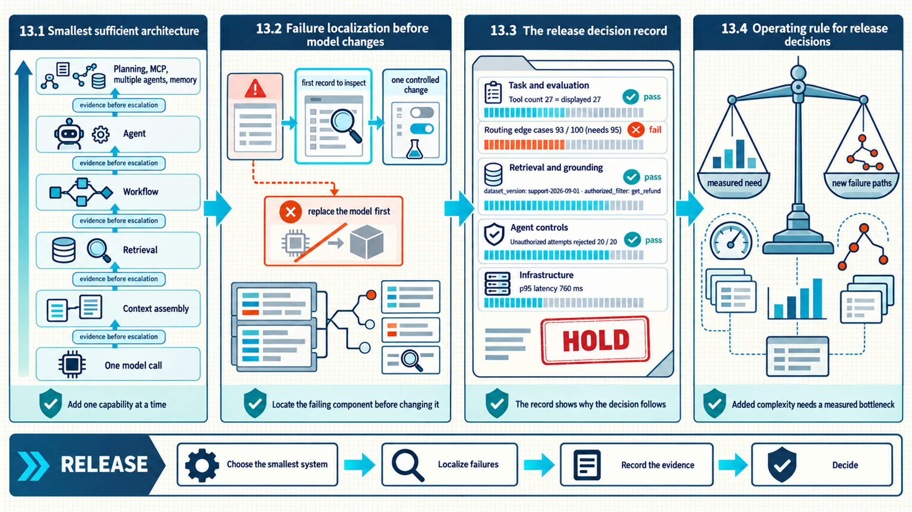

13 Evidence for release decisions
The integrated cases reconnected the technical layers through complete product traces. Implementation and assessment still require a compact way to choose system patterns, review evidence, and return to the full definitions. The decision path selects the smallest sufficient system, localizes failures before changes are made, and applies task, grounding, control, and infrastructure release checks.

The map begins with the smallest sufficient system, identifies the component that explains a failure, and ends with task, grounding, control, and infrastructure release gates.
13.1 Smallest sufficient architecture
The integrated product trace showed every Module 1 layer working together. A new product rarely needs every layer on its first version, and unnecessary autonomy or infrastructure increases the failure surface. The following path adds one capability at a time and requires evidence before each escalation.
- The starting task specification states the user-visible behavior, input boundary, final state, non-goals, safety constraints, latency target, and cost target.
- Representative and adversarial examples, a baseline, and evaluation lineage establish evidence before optimization.
- A single model call is sufficient when the required information fits the request and no external action is needed.
- Deterministic context assembly becomes useful when policy, history, examples, or structured records must enter the call.
- Retrieval addresses private, changing, large, or citable knowledge; retrieval and generation remain separate evaluation targets.
- A workflow represents known steps and branches while keeping control flow in software.
- An agent becomes relevant when observations determine which bounded tool action comes next.
- Explicit planning, MCP, multi-agent topology, or long-term memory correspond to named dependency, sharing, specialization, or persistence requirements.
| Observed need | Smallest likely pattern | Evidence before escalation |
|---|---|---|
| Stable-rubric transformation of supplied text | Prompted model call with structured output | Golden set, schema validity, quality, latency, cost |
| Private or current document access | RAG pipeline | Naive baseline, retrieval labels, support and citation checks |
| Routing among known paths | Deterministic or model-assisted workflow | Route confusion matrix and branch tests |
| Iterative tool choice | Bounded ReAct agent | Tool-selection tests, max-step fallback, repeated final-state success |
| Clear phases change after observations | Plan-and-Act | Plan validity, replan value, latency and cost delta |
| Independent expensive subtasks | Dependency graph and parallel scheduler | Dependency audit and critical-path measurement |
| Shared capabilities across hosts or teams | MCP boundary | Measured integration burden, permission and transport tests |
| One agent hits tool, context, serial, or domain responsibility limits | Orchestrator-worker or justified alternative | Single-agent baseline and named-limitation metric |
| Useful state must survive sessions | Typed episodic or semantic memory | Retrieval utility, correction, retention, and privacy tests |
13.2 Failure localization before model changes
The smallest-sufficient-system path identifies which components are present. When an evaluation fails, replacing the model before locating the broken boundary can hide the cause and introduce new variance. This table maps visible symptoms to the first record to inspect and one controlled diagnostic test.
| Symptom | Likely component | First inspection | Controlled next test |
|---|---|---|---|
| Answer ignores a source fact | Retrieval or context assembly | Was the labeled evidence retrieved and preserved? | Page-hit at k, metadata filters, prompt context snapshot |
| Correct evidence, unsupported claim | Generation or validation | Does the claim follow from the supplied chunks? | Faithfulness judge plus deterministic numeric check |
| Agent calls a plausible wrong tool | Tool schema or router | Are names, descriptions, arguments, and route classes distinct? | Tool-choice golden set and description ablation |
| Agent loops | Stopping policy or tool feedback | Is progress represented in state and is the fallback reachable? | Forced no-progress trace with step budget |
| Follow-up loses reference | Checkpoint or context assembly | Was session state restored under the same ID? | Restart and pronoun-resolution test |
| Old preference overrides correction | Semantic-memory conflict policy | Were both facts appended instead of superseded? | Correction, precedence, and deletion test |
| Multi-agent output is incomplete | Handoff or join specification | Did every required worker return a success status? | Missing-worker and partial-failure scenario |
| MCP tool writes too broadly | Authorization and server scope | Which user intent, credential scope, and root authorized the call? | Denied-path, expired-token, and approval test |
One-variable discipline
Change the component implicated by evidence, state the expected metric movement, keep the evaluation set and lineage fixed, and inspect side effects on quality, safety, latency, and cost.
13.3 Release decision record
A release record gathers the evidence needed to decide whether the selected architecture is ready for its intended task. Review each layer that the product actually uses: a system without MCP, multiple agents, or long-term memory does not need those checks, while a system that includes them needs evidence for their specific risks.
13.3.1 Task and evaluation evidence
Release review begins with the task specification and evaluation lineage established in Chapter 4. A high aggregate score can still conceal missing slices, unsafe automatic failures, or an unrepeatable comparison. The first review layer establishes the definition of success and the evidence behind the decision before downstream components are considered.
- Task, slices, final state, non-goals, automatic failures, and escalation path are explicit.
- Golden examples include normal, boundary, adversarial, empty, timeout, and permission-denied cases.
- Baseline, model, prompt, data, retriever, tool, judge, and code versions are recorded per run.
- Human labels have a rubric and calibration evidence; judge models have agreement and failure analysis.
- Quality, reliability, latency, cost, and safety have thresholds with confidence or uncertainty where appropriate.
13.3.2 Retrieval and grounding evidence
The task review establishes the cases whose answers need external evidence. Retrieval can appear healthy at the answer layer while losing source identity, freshness, access policy, or relevant pages. The retrieval review follows the evidence path from an authorized document to a supported claim.
- Source identity, page or unit identity, timestamps, access metadata, and chunk lineage survive indexing.
- Retrieval is evaluated against evidence labels, critical slices, and final-answer outcomes.
- Empty and insufficient retrieval produce an evidence-gap response with the next available user action.
- Citations identify the actual evidence unit supplied to the model and numeric claims are recomputed when possible.
- Index refresh, deletion propagation, embedding changes, and reranker changes have a documented operator or application component, change procedure, and tests.
13.3.3 Agent control evidence
The evidence path supplies observations to workflows and agents. Dynamic tool choice adds execution risk that answer-only evaluation cannot expose. The agent-control review considers typed state, tool permissions, budgets, approvals, and final-state validation together.
- State has a typed schema; nodes declare reads and writes; reducers and checkpoint boundaries are intentional.
- Tools have narrow names, descriptions, schemas, result sizes, idempotency policy, authorization, and error semantics.
- Side effects require the appropriate approval and validation immediately before execution.
- Iteration, time, cost, concurrency, and output budgets return a typed stop result that identifies the exhausted budget and the next permitted action.
- Repeated trials inspect final environment state and preserve diagnostic trajectories.
13.3.4 Infrastructure evidence
A controlled agent can operate without shared protocols, multiple agents, or long-term memory. When those infrastructure layers are present, they introduce independent routing, authorization, persistence, and deletion obligations. Each infrastructure boundary needs a documented data and control lifecycle with a responsible component or operator.
- MCP servers, versions, transports, capabilities, roots, credentials, approvals, and provenance are visible to the host.
- Multi-agent routing, handoff payload, currently active agent, completion rule, and loop budget are explicit.
- Working, episodic, semantic, and procedural memory have different schemas and stores.
- Memory capture, promotion, retrieval, correction, expiration, and deletion have tests and user-facing controls.
- Sensitive data and instructions from tools or memory remain untrusted inputs to policy-controlled execution.
13.4 Operating rule for release decisions
The central product-engineering rule is stable across the module: the model contributes learned language and decision capability, while application software is responsible for evidence, permissions, execution, state, measurement, and recovery. Product quality therefore depends less on one impressive response than on whether the complete system behaves correctly across representative and difficult cases.
Evaluation-driven development supplies the feedback loop. RAG supplies evidence that model weights do not reliably contain. Workflows encode known control flow. Agents choose among controlled tool actions when the path cannot be fixed in advance. Advanced planners expose useful task structure. MCP standardizes real sharing boundaries. Multi-agent systems isolate specialization when a single loop hits a measured limitation. Memory preserves only the state whose long-term value justifies its governance cost.
Final checkpoint
A sufficient system satisfies the task, preserves evidence through every component, evaluates both outcomes and components, and introduces additional complexity only when a measured limitation makes its value measurable.